这个部分我们将开始构建一个RISC-V处理器，实现软件和硬件的交互。
The CPU
- Processor (CPU): the active part of th computer that does all the work(data manipulation and decision-amking)
- Datapath: portion of the processor that contains hardware necessary to perform operations specified by the instruction set architecture (ISA)
- Control: portion of the processor that tells the datapath what needs to be done to execute the instructions
|
|
Five stages of the Datapath
这个和x86的流水线是类似的（
- Stage 1: Instruction Fetch (IF)
- Stage 2: Instruction Decode (ID)
- Stage 3: Execute (EX) - ALU (Arithmetic-Logic Unit)
- Stage 4: Memory Access (MEM)
- Stage 5: Write Back to Register (WB)
上图！
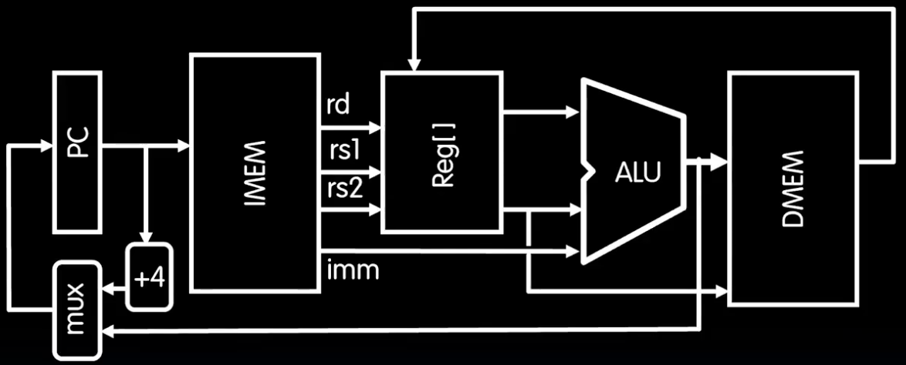
|
|
Some Combinations
- Register: 注意有一个write-enable信号，只有当这个信号为1时，寄存器才会被写入数据。
- Register File: 在RB32i中，我们有32个寄存器，每个寄存器都是32位的，所以我们需要一个32x32的寄存器文件。
- 之前在x86中我们会发现寄存器文件一般都是two-read,single-write的，这里也一样，原因就是我们使用到的指令一般都是2个源寄存器和1个目的寄存器。
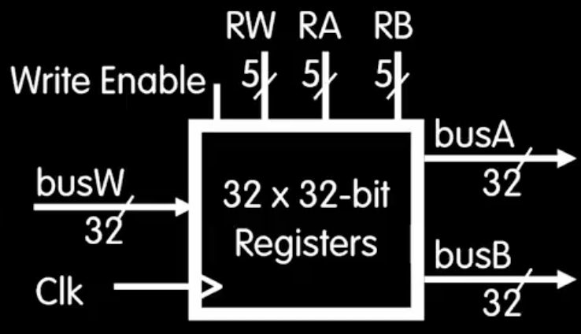
-
我们可以看到register file的细节，值得注意的是我们如何判断哪一个register写和读呢，可以注意到上方的三个n=5的输入，他们都是0-31的数，代表了目标寄存器的编号。
-
内存：和register file类似，如图所示：
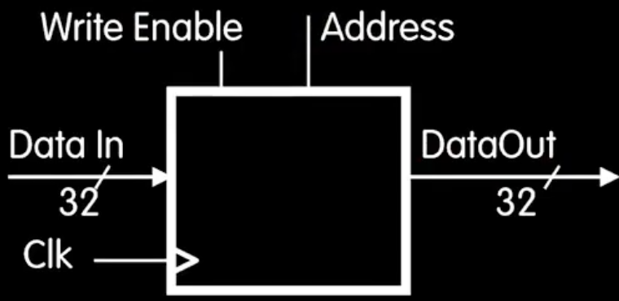
R-Type Add Datapath
很显然我们不可能一开始就直接搞出一个全通用的datapath来执行所有的指令，我们先从最简单的add开始。 首先我们要回忆一下add指令的格式:
|
|
这里需要控制模块加一个enable-write信号来允许rd的写入。
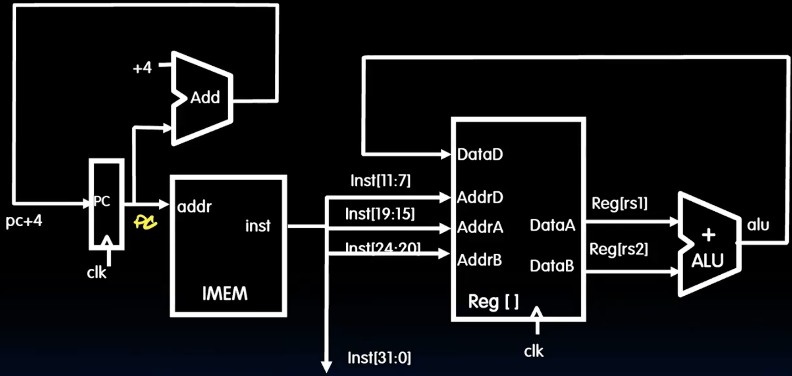
Sub Datapath
sub指令和add指令几乎一样，只有func7不同。 大部分的path都可以复用，唯一需要改变的是在alu上添加一个控制信号来区分add和sub。 其他的R-Format指令也是一个道理，先decode出对应的func序号，然后在alu上添加一个控制信号来区分不同的指令。
Datapath With Immediate
I-Format 格式：
|
|
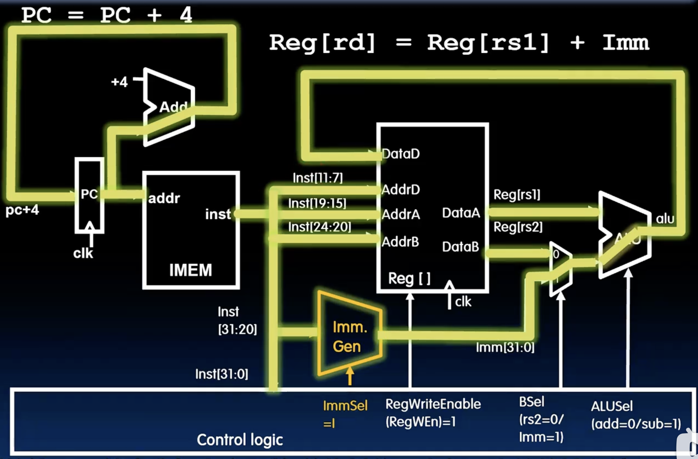
我们使用了一个mux来选择是使用立即数还是rs2中的值，控制逻辑需要设置一个信号Bsel来选择。 同时，我们需要生成一个32位的立即数，这个过程叫做immediate generation，我们需要根据指令的格式来生成对应的立即数。 在i-type指令中，我们已经有了12位的立即数，只需要进行符号扩展就行了。 至于rs2，依然会自动read，但是不选择。 这里我们才能深刻领会各种指令格式为什么需要对齐，只有对齐寄存器和imm，我们才能使用同一个datapath来decode不同类型的指令。
Load is also Immediate Type
load指令也是i-type的一种，只不过多了一个memory access的阶段，我们需要在datapath中添加一个memory access的模块来处理load指令。
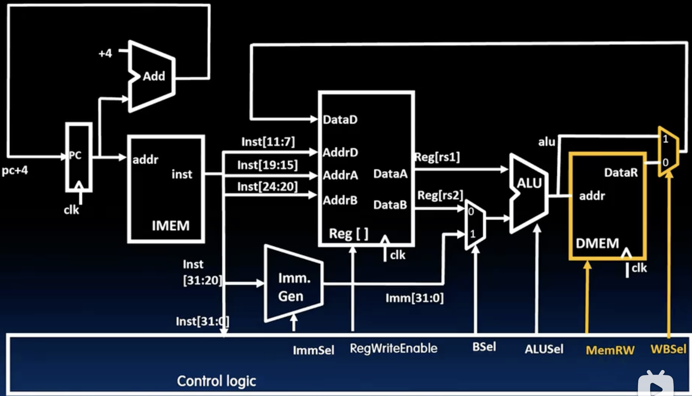
- 无非是在将要写会寄存器之前加一个mux选择是用alu的结果还是memory access的结果，都是由控制逻辑的信号来决定的。
- 当然我们还有一些其他的load指令类型，比如lb, lh, lbu, lhu等，他们的datapath也是在load的基础上进行的，需要添加一些gate、mux来处理不同的情况。
adding sw instruction
sw指令是s-type的一种，格式如下：
|
|
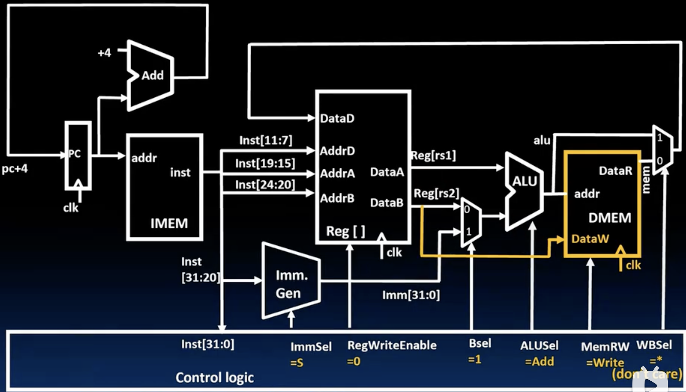
- 由于save指令需要将目标寄存器的值写入内存，所以我们需要将rs2的值连一条线到memory access模块的输入端。
- 同时由于S-type的立即数是分成两部分的，所以我们需要修改immediate generation的逻辑来生成正确的立即数。
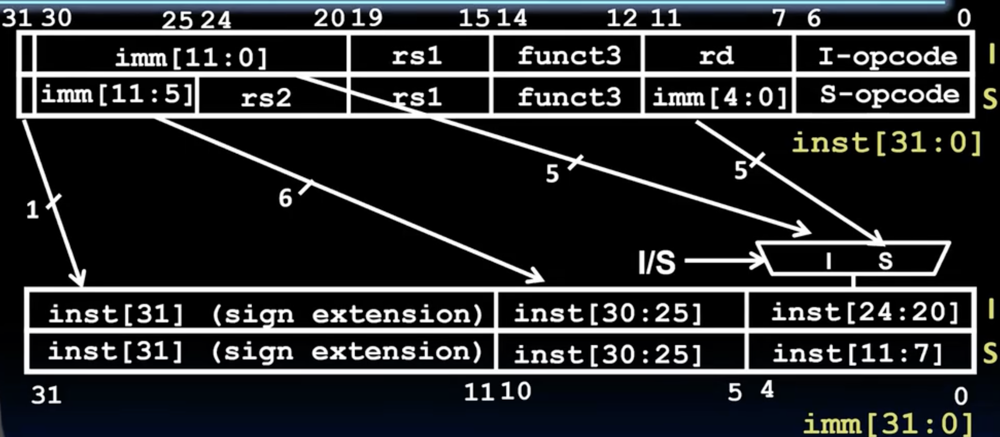
- 这里我们会发现5-10位的立即数都是一样的，直接使用指令的25-30位即可，然后31位的进行符号扩展，至于0-4位的立即数一个来源是指令的20-24位，一个来源是指令的7-11位，我们可以用一个mux来选择。
- 至于sb，sh等其他的store指令我们完全可以复用当前的datapath，当然需要加一些控制来防止写入不应该写入的内存。
Branches
- 首先我们要回忆一下branch指令的格式：
|
|
- 之前我们说过由于risc-v32中的指令基本上都是32位4字节的，但是考虑到一些压缩指令的存在（2字节），所以这里我们默认imm的第零位是0，然后多存了一个imm[12]扩大了imm的范围。
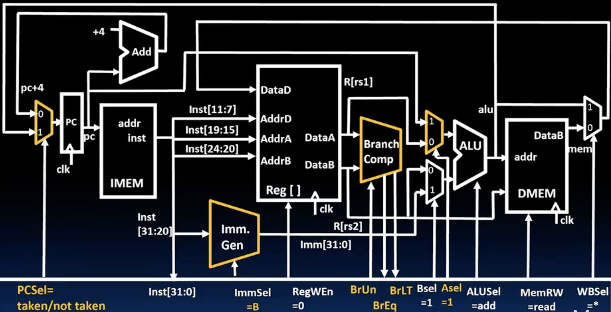
- 我们将添加一个新的组件Branch Comp,在sr1的选择端添加一个mux（Asel）来选择是用rs1还是pc的值，同时pc的输入端也要添加一个mux来选择是用pc+4还是pc+imm。
- 在Branch Comp中，我们有6种已知的比较方式（beq, bne, blt, bge, bltu, bgeu），最后两个是前者的无符号版本，而前面4个都是可以通过取反得到另一个的，如果我们想得到bne的结果，只需要在control logic中取反即可，bge同理。至于具体如何计算beq和blt的结果，我们可以在alu中添加一个sub来计算rs1-rs2的结果（符号相同的情况下），如果结果为0则beq为真，如果结果小于0则blt为真？这个对于有符号整数来说是可以的，对于无符号整数呢？其实可以搞一个逐位比较器？
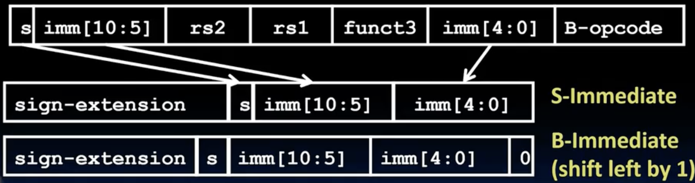
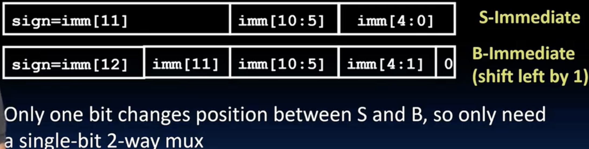
- 这两个图充分展示了risc-v指令的设计之美，如果我们按照常规的方式（第一张图）来安排imm的位数，那么你会发现这里每一位都需要左移一位，这就导致了虽然我们的B-type和S-type类似，但是每一位的imm都不确定，需要一个mux来选择，这个的复杂度是不可接受的，于是伟大的risc-v设计者顺水推舟的在指令中直接左移了一位（第二个图），仅仅是把imm[11]换到了第0位，这样其他的位都是原封不动的，只有imm[11]需要mux来选择，大大简化了imm的生成逻辑。
Jalr 特殊的跳转
- 以jalr指令为例子，指令格式如下： (属于是I-type的一种)
|
|
- jalr指令的功能是将pc+4的值写入rd寄存器，然后将rs1+imm的值作为新的pc值。
- 由于jalr的指令格式和I-type一样，所以他的imm生成不用担心，所以rs1+imm的计算也可以复用，而将这个计算值传递给pc的线路我们在刚才的branch中国已经设计好了，直接把PCsel控制设置成taken即可，唯一需要添加的就是将这个pc+4的值传递到rd寄存器，我们可以添加一条线从pc+4的输出端到writeback的输入端，同时把writeback的mux设置成3种选择：alu的结果，memory access的结果，pc+4的值。其中2对应pc+4，其实也完全可以用mux级联替代这里的3选1mux。
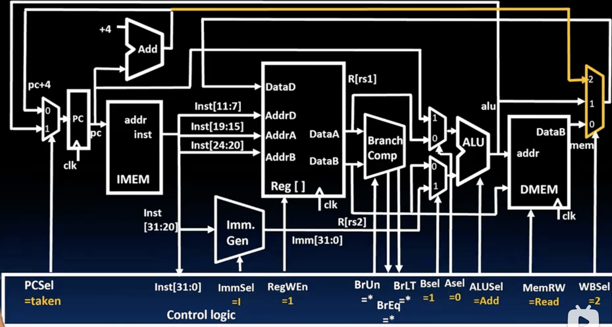
J-Format for Jump Instruction
- J-type指令的格式如下：
|
|
- jal指令干了两件事：1是将pc+4的值写入rd寄存器（这个我们在jalr中已经实现），2是将pc+imm的值作为新的pc值（也在branch中实现了），唯一需要改变的就是的imm的生成逻辑（比I-type复杂一些）。
Adding U-Types
- U-type指令的格式如下：
|
|
- lui指令将20位高位立即数加载到目标寄存器中，并将低12位清零。
- auipc 指令将20位高位立即数加上当前pc的值，并将结果存储到目标寄存器中。
- 所有的硬件组件都已经设计好了，只需要修改Imm Gen的逻辑即可，直接加一个mux来选择高20位绕过符号扩展等一些复杂的判断似乎是最简单的办法了。
Summary
- 恭喜🎉，通过复杂的设计，我们得到了一个可以执行任何一条risc-v32指令的处理器！
- 但其实我们有一个重要的东西还没有实现，那就是control logic，之前我们都是假设有一个控制逻辑来告诉datapath如何执行指令，但是我们还没有设计这个控制逻辑，下一部分我们将设计这个控制逻辑来完成整个处理器的设计。